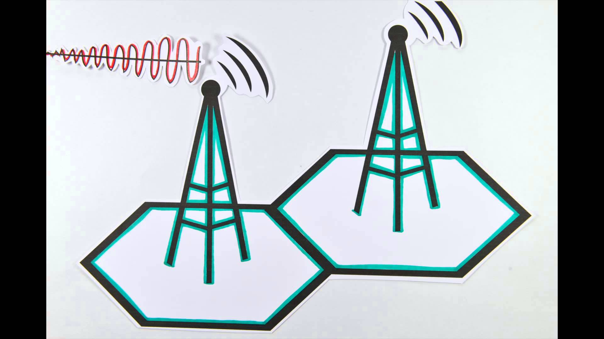
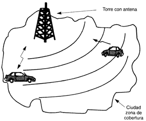
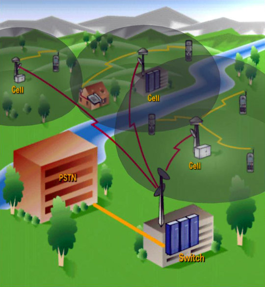
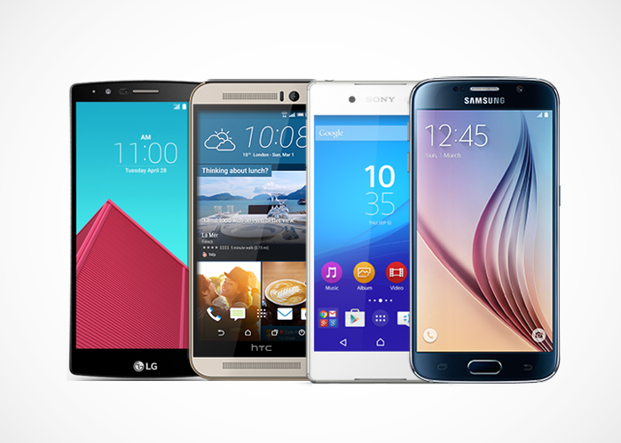

Telefonía celular
Celular Samsung
Esta es mi imagen de perfil:

Esta es mi imagen de perfil:
Entendemos por telefonía celular a aquel sistema de comunicación que se da a partir del uso de elementos pequeños o 'células' que se conocen como celulares. La telefonía celular es uno de los avances más importantes y difundidos en el mundo en los últimos años y su llegada a millones de personas tiene que ver con la facilidad y la comodidad que otorga a sus clientes para comunicarse desde cualquier lugar y a cualquier hora.
telefonía móvil (o telefonía celular)


A los efectos de mostrar la evolución de la telefonía móvil en la historia se procederá a describir una breve reseña que muestra el avance de la misma: 1843 – Un talentoso químico de nombre Michael Faraday comenzó un profundo estudio sobre la posible conducción de electricidad del espacio. Faraday expuso sus grandes avances respecto a la tecnología del siglo anterior, lo que ayudó en forma incalculable en el desarrollo de la telefonía celular. 1876 - El teléfono es inventado por Alexander Graham Bell. 1894 – Si bien la comunicación inalámbrica tiene sus raíces en la invención del radio por Nikolai Tesla en la década de 1880, formalmente fue presentado en 1894 por un joven italiano llamado Guglielmo Marconi. Cuando el usuario desea realizar una llamada, el teléfono celular envía un mensaje a la torre solicitando una conexión a un número de teléfono específico. Si la torre dispone de los suficientes recursos para permitir la comunicación, un dispositivo llamado "switch" conecta la señal del teléfono celular a un canal el la red de telefonía pública. La llamada en este momento toma un canal inalámbrico así como un canal en la red de telefonía pública que se mantendrán abiertos hasta que la llamada se concluya. Digamos que usted tiene un celular, lo enciende, y alguien trata de llamarle. La MTSO recibe la llamada, y trata de encontrarlo. Desde los primeros sistemas la MTSO lo encontraba activando su teléfono (utilizando uno de los canales de control, ya que su teléfono se encuentra siempre escuchando) en cada célula de la región hasta que su teléfono respondiera. Entonces la estación base y el teléfono decidirán cuál de los 59 canales en su teléfono celular usará. Ahora estará conectado a la estación base y puede empezar a hablar y escuchar.

En este nivel encajan los smartphones que estén dotados con casi todos los elementos más evolucionados de la telefonía móvil Los mejores avances tecnológicos pueden aparecer en está gama para luego ser heredados con el tiempo a la gama media en menor medida.
También pueden incluirse otros terminales no tan nuevos pero que siguen siendo una excelente opción en gama alta aunque no cumplan con el requisito del precio.

Los smartphones de media gama se caracterizan por tener pantallas de calidad, pero de menor tamaño, resolución y profundidad de pixeles por pulgada; en la mayoría de los casos funcionan con una versión anterior a la más actual de su sistema operativo; los procesadores no tienen la potencia de los que encontramos en gamas superiores, y las cámaras y fotográficas generalmente cuentan con menos cantidad de megapíxeles. En esta categoría también situaremos a cierto número de celulares que en su momento fueron considerados de alta gama, pero que se han quedado rezagados por los adelantos que se producen en la telefonía celular.


 4
4